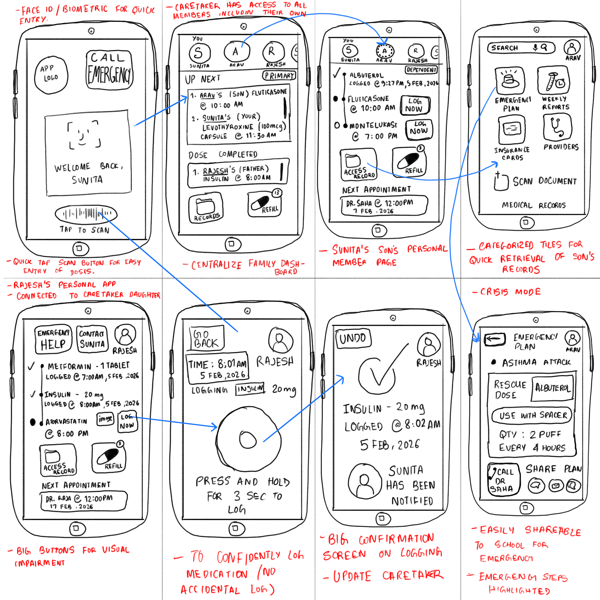

Wireframes
Hand-drawn 8-screen blueprint via Adobe Fresco.

Design Rationale
The wireframes use a fidelity-balanced approach to focus on Information Architecture and Interaction Logic. Handwritten annotations provide immediate clinical context for medications like Albuterol and Lantus, ensuring the UX story is clear even at a sketch level.